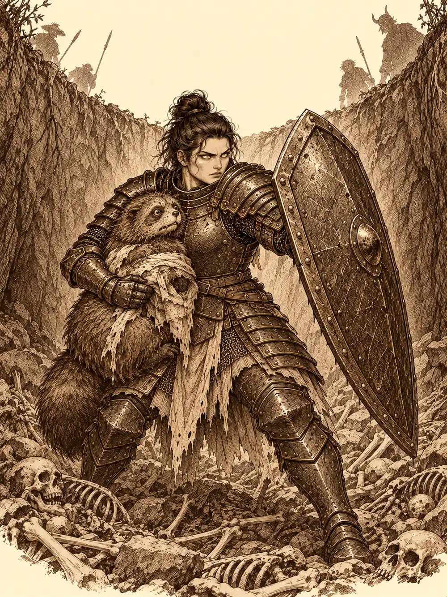

Capítulo 170
Asalto al sur
Libro X · Hasta pronto, Kuroto
El campamento del sur olía a brea, a caballos y a guiso recalentado. Los soldados habían levantado empalizadas nuevas alrededor de la Puerta Negra y se movían con la soltura de quien ya no espera que el suelo le grite dentro de la cabeza. Guxi, Serafina, Arwen, Banzo y Kazuki llegaron juntos, cada uno con su cansancio a cuestas.
El consejo que Guxi había convocado en palacio no había salido como esperaba, y todavía le daba vueltas. Serafina había pasado los días buscando a alguien nacido en la isla que pudiera explicarle la visión del templo y entrenando con Sun. Arwen había seguido devolviendo muertos al ciclo y ayudando a reconstruir, y gastando bromas cuando se aburría. Banzo había estado en la cala, levantando piedra sobre piedra algo que él llamaba mausoleo aunque no supiera muy bien cómo se hacía uno.
"Ya no puedo contactar con mis ancestros", les dijo por el camino, sin que nadie le preguntara. Lo dijo como quien comenta el tiempo. Nadie supo qué contestar.
Palayer los esperaba junto a la tienda de mando, con Hati y con Wel. Arwen se le tiró encima en cuanto la vio, como una bola de pelo, y la paladina la sostuvo con un brazo. Le dijo que sentía no haber estado en Sho cuando pasó todo, y la abrazó. Calista estaría en un lugar mejor, dijeron; de Gelbreak nadie sabía nada.
Antes de acercarse, Banzo reunió a los demás un poco aparte y bajó la voz.
"¿Veis a ese de ahí, el de la trenza? Voy a intentar que venga con nosotros. Tiene una deuda pendiente con alguien que ya no está. Si viene, no va a volver".
Kazuki dijo que no le hacía gracia acabar con una vida así. Guxi le preguntó si estaba seguro, porque lo último que necesitaban con Calista muerta y el gobierno tambaleándose era enemistarse con el rey dragón.
"Ya somos enemigos", contestó el goliat. "Ese intentó hacerle daño a ella y lo tengo guardado".
"Si crees que es lo correcto, te apoyaré", dijo Guxi. Los demás, con sus reparos, acabaron ofreciéndole ayuda.
Wel estaba explicando sobre un mapa la ruta que habían seguido los exploradores. La Puerta Negra ya no emitía la locura de antes y se podía cruzar; habían visto un pequeño campamento enemigo más al sur, y los generales querían mandar una avanzadilla. Recibió a los cazadores con un comentario sobre lo mucho que habían tardado. Arwen, a su espalda, le hacía muecas, y él la pilló a la tercera.
Luego mencionó a la antigua shogun. Banzo se le acercó hasta que pudo olerle el aliento.
"Como vuelvas a nombrarla, te arranco la cabeza y la devuelvo al mar. ¿Lo has entendido?".
Wel abrió la boca para contestar y no lo hizo. Algo detrás del goliat lo había dejado mudo: una figura que le recordaba a alguien. Bajó la cabeza, ante la extrañeza de sus propios tritones, y tardó en recomponerse.
"Un verdadero general siempre va delante de sus ejércitos", siguió Banzo. "¿Por qué no nos enseñas de lo que sois capaces los de ahí abajo? Y ese collar de perro del dragón ya te lo puedes quitar aquí arriba".
"¿Quieres ver lo que hace ese collar y nuestra fe en el dragón?", contestó Wel, y fue a por su tridente.
Arwen se subió a los hombros del goliat, encantada. "Lo has dejado igual de planchado que lo hacía Calista. Enséñame a hacerlo".
Antes de salir, la niña repartió recipientes con gusanos rellenos de salsa de escarabajo y pulgas salteadas con hierbas del bosque. Todos comieron, unos con más entusiasmo que otros, y todos se sintieron más fuertes.
Al otro lado de la Puerta Negra se extendía un páramo de piedra gris, polvo y árboles muertos. No se oía nada. Ni pájaros ni insectos, solo el viento y, muy lejos, algún alarido. Arwen arrugó la nariz.
"Aquí no hay ningún sonido ni ninguna planta. Esto no está bien. Huele igual que los demonios. Es su cárcel. De aquí salieron todas las oleadas".
Kazuki se detuvo, apoyó la mano en el puño del estoque y empezó a murmurar en silvano para afinar los sentidos. Palayer se paraba cada tanto a sentir la presencia de demonios a su alrededor. Arwen olfateaba en forma de perro. Y fue entonces, mientras estaban quietos, cuando las sombras se levantaron de sus propias sombras.
No vinieron de ningún sitio. Brotaron del suelo, de debajo de sus pies, y algunos ni siquiera las vieron llegar. Palayer, Arwen y Banzo las sintieron un instante antes. La niña se convirtió en árbol y cubrió con las ramas a los que se habían quedado paralizados por la sorpresa. Luego todo fue puños, magia y armas que ardían con luz. Cuando terminaron, Arwen recogió un puñado de aquella tierra muerta y se lo guardó para estudiarlo.
Después les fue tirando barro a cada uno para que se confundieran con el terreno, como hacen los animales. Wel, que brillaba azul como un farol, recibió un buen puñado en plena cara.
Siguieron así, manchados de tierra, hasta que Palayer notó una presencia demoníaca densa justo delante. Era una empalizada de troncos afilados, alta y sin huecos.
Guxi se volvió invisible y subió por el aire para echar un vistazo por encima del muro. Volvió con la cara blanca. Había demasiados demonios.
Arwen se hizo cucaracha y se coló por debajo de los troncos. Cuando Serafina consiguió recogerla y traerla de vuelta, contó lo que había visto: yokai heridos, muchos, junto a un foso enorme. Y no solo malos. También buenos.
Los planes empezaron a enredarse. Unos querían buscar una entrada, otros esperar, otros ir directamente. Wel se burlaba de los cazadores y Banzo le enseñaba los dientes. Al final el goliat se hartó.
"Si todo el mundo tiene tan claro lo que hay que hacer, ¿por qué no lo hace?".
Y empezó a escalar la empalizada.
Del otro lado había tiendas, barriles donde se calentaba agua, un carro con trozos de carne que no supo identificar y, en el centro, el foso. Los demonios arrojaban dentro a yokai malheridos: tanuki, kamaitachi, criaturas pequeñas que no habían hecho nada. Junto al borde había dos figuras con armadura, de rango claramente superior. Banzo, que entendía la lengua del abismo, oyó lo que decían.
"Hay que matarlos a todos", dijo el primero, al que llamaban Silus. "Los que no se transforman no son de Otakemaru".
Le dio una patada a un kamaitachi y lo mandó al foso. La otra figura, una mujer con armadura negra, llevó la mano a la espada.
"Pero estos también son de los nuestros".
"Ya no. Otakemaru solo quiere a los que vinieron con nosotros".
La objeción no detuvo nada. Siguieron cayendo cuerpos.
Banzo se metió en uno de los barriles de agua, que le llegaba a la barbilla, y desde allí gritó en la lengua del abismo que había enemigos en el sur. Dos de los demonios se volvieron hacia el sur. La mujer de armadura negra se quedó mirando el barril con extrañeza: aquella voz no era de ninguno de los suyos.
Arwen había seguido al goliat en forma de cucaracha. Kazuki entró invisible por medio de la magia, y el chasquido de su paso hizo que varias cabezas se giraran. Guxi aceleró a Serafina y los demás se acercaron por la puerta principal. No hubo sorpresa para nadie.
Los demonios empezaron a buscar a los intrusos y, mientras buscaban, seguían matando prisioneros. Una bestia del trueno, de esas que los demonios llevaban consigo, clavó sus ojos en Kazuki como si la invisibilidad no existiera. Arwen hizo estallar la luz sobre medio campamento y el mago respondió con una lluvia de meteoritos. Las dos cosas arrasaron a los enemigos, y también a algunos de los cautivos que estaban junto al foso. Los vieron caer bajo su propio fuego. Nadie pudo decir después que no lo hubiera visto.
El grupo se dispersó luchando entre tengu, oni y mujeres araña. Una demonio encantó a Guxi y durante un rato él no pudo levantar la mano contra ella, hasta que un golpe de otro enemigo le devolvió el juicio; entonces sacó la pistola y empezó a despejar el campo. Palayer protegía a los que tenía cerca con su aura y golpeaba con fuerza radiante. Arwen curaba a Kazuki y a quien se le pusiera por delante, y el mago seguía lanzando magia.
Silus se envolvió en un aura y en rayos. Banzo fue a por él con todo lo que tenía, golpe tras golpe, y cuando el demonio aún se tenía en pie, de la espalda del goliat salió una figura de sombra y lo partió por la mitad.
Entonces, entre los huesos del fondo del foso, se oyeron unas voces débiles. Un tanuki se arrastraba vivo.
La mujer de armadura negra lo vio. Se volvió hacia uno de sus propios tengu y lo abrió de un tajo. Las sombras la rodearon y solo le quedaron visibles los ojos. Bajó al foso, sacó al tanuki en brazos, lo curó y se plantó con el escudo delante de él, encarando a cualquiera que se acercara, demonios o cazadores.
Mientras tanto, Banzo había ido a por Wel. Intentó agarrarlo y el tritón se le escurrió.
"¿Qué estás haciendo?".
"No soy tan estúpido como tus amigos para meterme en medio de un campamento", le contestó Wel.
Entonces una sombra lo durmió y el tritón se desplomó. Banzo le cayó encima y lo golpeó una vez y otra, con la furia entera. Wel no murió con los golpes. De la espalda del goliat salió una figura de tritón hecha de sombra, que se inclinó sobre el general caído y le arrancó medio cuello de un mordisco. El cuerpo fue a parar al foso. Ningún demonio lo había tocado.
Solo quedaba un tengu en pie, que seguía atacando a Serafina. La mujer de armadura negra dejó al tanuki a salvo y le habló en la lengua del abismo.
"Ya es hora de dejar esta batalla. Baja las armas. Esto no tiene sentido. Estamos matando a nuestra propia gente. Mira al tanuki. Esto no es lo que el rey quería. Ya no reconozco al que fue nuestro líder".

El tengu miró alrededor, los cadáveres, el foso. Gruñó y bajó las armas.
"¿Quién eres tú?", le preguntaron.
Ella se puso delante del tengu con el escudo alzado.
"No importa quién sea. Dejad marchar al tanuki y al tengu".
"Al tanuki lo llevaremos nosotros mismos".
"Os he visto. No os ha importado mucho rematar a los que quedaban. No me fío de vosotros".
"Y tú entenderás que nosotros tampoco nos fiemos de ti".
"Entonces, si queréis un prisionero, llevadme a mí. Soy su general".
Le preguntaron si ya no estaba bajo las órdenes de Otakemaru. Tensó la mandíbula.
"Otakemaru es mi rey, mi señor. Pero he visto en lo que se ha convertido, y no es el que yo reconocí".
Se volvió hacia el tengu y le dijo que se fuera. El soldado enseñó los dientes una última vez y se marchó volando. Ella soltó el escudo y el hacha y levantó las manos. No tenían grilletes, así que buscaron cadenas por el campamento y la ataron con ellas. Se llamaba Véspera.
Palayer la miró con el sentido de los de su orden. Era un demonio, eso era seguro. Pero algo había cambiado en ella en el momento en que atacó a su propio tengu y sacó al tanuki del foso: el juramento que la ataba a su señor estaba roto, como el de un paladín caído. La drow la observó largo rato, con más curiosidad que recelo. Véspera le devolvió una mirada dorada, tan tranquila que escocía.
Arwen curó al tanuki. Después bajó al foso convertida en águila y fue tocando, uno a uno, los cuerpos de los muertos recientes, y de cada uno subió una luz. Banzo le pidió que se asegurara de que Wel se reencarnara en algo que nunca volviera a salir a la superficie. La niña le dijo que ella no decidía en qué volvía nadie, pero que lo intentaría.
Regresaron al norte con una prisionera encadenada, un tanuki vivo y la muerte de un general que habría que explicar.
En el campamento, Palayer encadenó a Véspera a un poste y le exigió saberlo todo de Otakemaru antes del amanecer. La general le contó que había protegido al tanuki porque era de su pueblo, y describió a los colonos como destructores de bosques y cazadores de yokai. Reconoció haber seguido a su rey por venganza y haber aceptado un poder que no entendía. Sirth trazó un círculo de verdad bajo sus pies y no encontró mentira. Con la mirada que ve lo que hay debajo, distinguió bajo la transformación los rasgos de una yokai, y le pidió calma a la paladina. Véspera confesó que ya no recordaba su antiguo nombre. Serafina le enseñó el dibujo de su visión y la prisionera no reconoció al hombre de la montaña, pero sí los barcos y los bosques de su propia historia. Banzo se negó a recuperar su collar y salió de la tienda.
Kurobane fue a verla de noche, enmascarado, y le preguntó por qué se había vuelto contra los demonios. Mientras hablaban, se le acercó demasiado y empezó a calcular sus puntos débiles. Ella le leyó el pensamiento y le advirtió que usaba poderes parecidos a los de sus enemigos. Él dejó crecer su oscuridad y ella lo envolvió en una mucho más negra, hasta que el ninja sintió terror y se marchó. Volvió días después con un plato de comida, se presentó por su nombre y le pidió perdón. Le contó que en su monasterio un ser llamado Osuray se había presentado como el primer portador de aquella magia. A Véspera el nombre le sonaba vagamente, como el de tantos que habían intentado dominar ese poder y habían acabado mal. No le ofreció ninguna cura. Palayer, por su parte, volvió a la tienda con agua, comida y una manta. Ya no le hablaba de ejecución. Le preguntó por otros que dudaran como ella, y Véspera le explicó que unos seguían a Otakemaru sometidos por su poder y otros por lealtad o por venganza, y que ella misma se había ofrecido a un ritual doloroso que ya no recordaba. No se sentía capaz de alzar el arma contra quien fue su rey. La paladina le prometió que no se lo exigiría y desancló la cadena del poste para que pudiera moverse. Días más tarde, Sirth le llevó un gran mapa de las tierras de más allá de la Puerta Negra y le pidió que marcara los campamentos enemigos. Ella los marcó.
En Sho, Banzo subió al pico del lago a por camelias azules y las llevó a la cala. Le habló a Calista en voz baja: un hombre había pagado por lo que le había hecho y nunca volvería a pronunciar su nombre. No sentía remordimiento. Se preguntó en qué lo convertía matar así. Encendió incienso. Luego fue a palacio, se llevó a Yasuoka al antiguo despacho de Calista y lo invitó a sentarse en su silla. Le dijo que había quitado de en medio a Wel y le pidió que hiciera algo parecido, con más sutileza, con la Perla de los tritones: no podían permitirse otra guerra ni que el reino del mar ocupara Kuroto. Yasuoka razonó que sin Calista los tritones tenían menos posibilidades en el consejo. Pegada al hombro del goliat, una mosca escuchaba. Era Channi, que salió volando hacia los barrios bajos a contárselo todo a Tiari.
Sirth convocó a los cazadores en la base para decidir qué hacer con la prisionera. Sun vino también, y el clérigo le entregó un collar y le dio la bienvenida al cuerpo; el mono se emocionó tanto que tuvo que sentarse. Luego le tocó a Kurobane. Pidió perdón delante de todos. Sirth le exigió que devolviera el collar que no era suyo, y el ninja se lo dio a Banzo. Contó que había ido a ver a Véspera buscando ayuda para dejar las sombras. Sirth le contestó que la versión de la prisionera era otra. La discusión creció hasta que las niñas se asustaron.
Banzo se levantó. Recordó los errores de cada uno, los suyos los primeros, y dijo que no iba a dejar fuera a uno de ellos como si los demás fueran inocentes. Que la familia estaba por encima de cualquier título. Y rompió su collar con las manos.
Sirth dejó caer el aura amenazante que había desplegado y rompió el suyo. Kazuki, Serafina y Jin lo imitaron. Guxi y Sun prefirieron guardarlos. Channi intentó romper el suyo a picotazos.
Después Banzo se trazó una línea de sangre en el pecho y sus tatuajes luminosos se extendieron hacia los demás. A cada uno le apareció una marca en un sitio distinto: en la pata de Channi, en el puño de Serafina, en el cuello de Kurobane, en la palma de Kazuki, en la espalda de Arwen, en la muñeca de Sun, junto al corazón de Sirth, en la chaqueta de Guxi. Jin notó un brillo bajo la armadura. Kurobane se acercó a Channi, le pidió perdón y le dio las gracias por haberlo cuidado, y cuando habló de familia ella se le echó al cuello.
Esa noche Tiari interceptó a Banzo cerca de la base. Le dijo que ahora tenía un asiento en el consejo y que sabía lo que había hablado con Yasuoka. Le insinuó que un grandullón ya había eliminado a un general, que quedaba la Perlita y un dragón paciente, y que su puesto podía servir de cebo. Banzo aceptó esperar. Volvió a la base convencido de que el espía era Kurobane, rompió una silla, salió a arrancar árboles y volvió más calmado para pedirle a Sirth un círculo de verdad. El ninja juró que Tiari lo había expulsado y que no trabajaba para ella. Era cierto. Y entonces contó lo que Channi acababa de confiarle jugando a la pelota en el patio. Banzo se quedó mudo y le pidió perdón.
Por la mañana, Channi les enseñó la bolsa de las Cuchillas Negras y el anillo que llevaba colgado. Les explicó que Tiari le había dado de comer y una cama, y que ahora ella la ayudaba contando lo que hacían los demás, que era como el juego de espiar que Kurobane le había propuesto una vez. Banzo le dijo que espiar a los amigos estaba mal, y que nadie parecía haberle enseñado esa diferencia. La niña comprendió y pidió perdón. El goliat propuso ir a comer maíz frito.
Compraron veinticinco mazorcas y se las comieron junto al lago con Guxi y Serafina. Channi enseñó diez garras cuando le preguntaron la edad. Guxi recordó que ya no existían los cazadores, y Banzo propuso que fueran guardianes de Kuroto, sin sueldo, sin reconocimiento y sin obedecer a más poder que a la tierra. Serafina lo apoyó con entusiasmo y Guxi, aunque echaba de menos la institución, dijo que confiaba en ellos.
Al atardecer, Banzo volvió a la cala con una mazorca y una botella de vino robada de las cocinas. Le contó a Calista que había roto su collar y que los demás lo habían seguido. Esperó a que se pusiera el sol y se fue.
En cuanto se alejó, un hacha enorme se clavó junto al altar. Tenía el filo de hielo medio fundido. Detrás apareció un goliat con media cara y parte del torso deformados, como cera que ha estado demasiado cerca del fuego. Banzo lo reconoció al instante y el miedo lo dejó clavado en la arena. Era uno de los de su tribu, el que lo humillaba de niño, el que lo había tirado montaña abajo durante la prueba de adultez. Le dijo que su pueblo había caído ante un dragón de sombras y que había llegado hasta allí siguiendo al barquero que había traído a Banzo, al que le había cortado las piernas para que hablara. Eso rompió la parálisis. Banzo atacó y el hacha apenas le hizo un rasguño. El otro lo agarró del cuello y lo estampó contra el altar de Calista, que se partió en pedazos. Le retorció la mano y lo golpeó una vez tras otra preguntándole dónde estaba el dragón. Banzo no dijo nada.
Lo dejó inconsciente entre las piedras del memorial y se fue diciendo que preguntaría a otros.